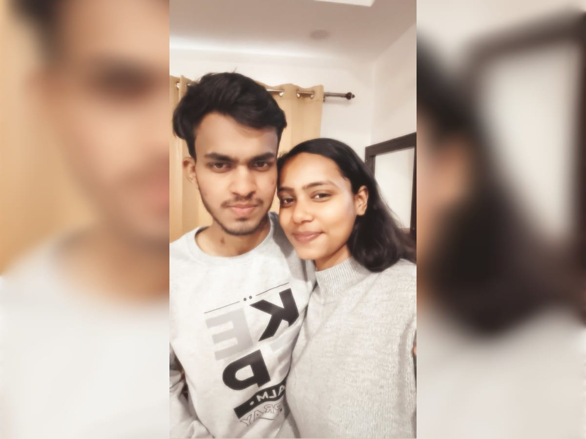
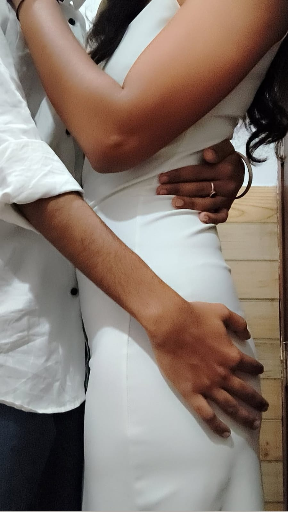
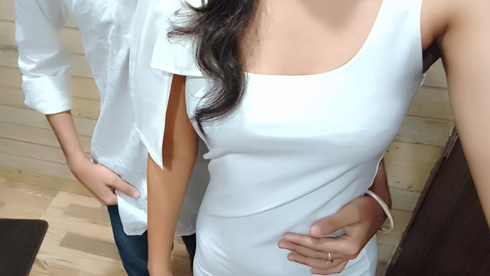
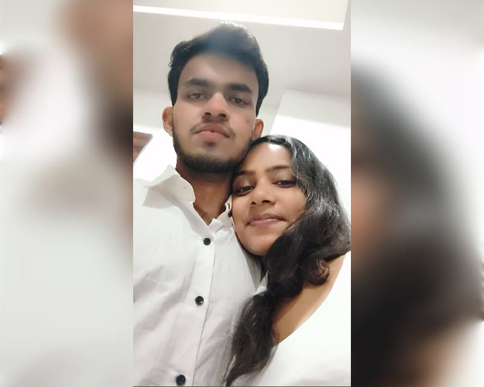

I don't remember exactly when it happened...
but talking to you slowly became one of my favourite things.
THE LITTLE THINGS
It was the conversations, the laughs, the little fights, and all those ordinary moments that somehow started feeling different.

THE MOMENT
Some moments don't look extraordinary when they happen.
But later, you realize... they were actually the ones you wanted to keep forever.
A FEELING
They're felt.
And somehow, this one still feels special. ❤️

IF I COULD PAUSE TIME

Because sometimes you don't realize how precious a moment is... until it becomes a memory.

YOUR SMILE
It would probably be this one.
You beside me. ❤️
ONE OF THOSE MOMENTS
Ap Nahi aaogai kabhiii.....
Mai Jarur aaunga dekhna......
Sahi mai AAgayai Mujhai Wiswass nahi Ho raha hai......
And somewhere along the way...
You became someone I genuinely looked forward to.
Maybe that's when we started getting closer. 🤍A LITTLE SOMETHING 🎵
OUR LITTLE CHAPTER
And then...
I didn't know it yet, but this was only the beginning.
See what happened next ❤️